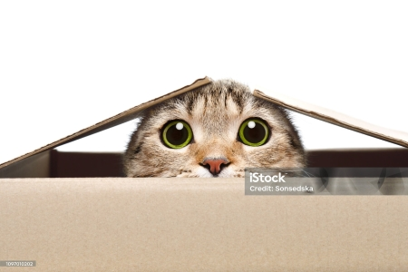
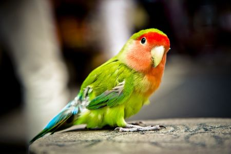

Servicios


Contacto
Puedes encontrarnos en: Avenida Acovichay Alto al costado de la Aldea en el primer pasaje
Dirección: Calle Principal, Ciudad -- Teléfono: 123-456-789Correo electrónico: info@mimascotavet.com
Acerca de Nosotros
Somos una clínica veterinaria dedicada al cuidado de las mascotas desde hace más de 10 años. Nuestro equipo está formado por veterinarios especializados en el tratamiento y prevención de enfermedades en animales domésticos.
Ubicación
Nuestra clínica se encuentra ubicada en una zona céntrica de la ciudad, lo que facilita el acceso a nuestros servicios para los dueños de mascotas. ¡Te esperamos!